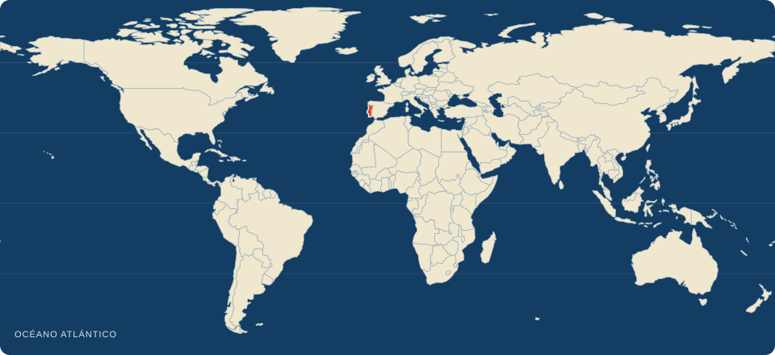

El rojo de la pasión. El verde de sus paisajes. El azul de sus azulejos. Viaja entre goles, sabores, revoluciones y pequeñas historias que hacen grande a Portugal.
El Atlántico de fondo. Mil historias por delante.PT.
SAUDADE⚽ FUTEBOLAZULEJOSPASTÉIS DE NATA♫ FADOATLÂNTICO
PORTUGAL Y SUS ISLAS ATLÁNTICAS
Un país entre Europa y el océano.
Explora el mapa y toca cada punto. Verás qué islas fueron parte de los acuerdos entre Portugal y Castilla y qué se discute hoy sobre las aguas.
MAPA MUNDI Portugal destacado y ampliado

EUROPA · PENÍNSULA IBÉRICAPortugal en rojo
ISLAS DEL ATLÁNTICO ORIENTALPosiciones reales · selección interactiva
EUROPAÁFRICAATLÁNTICOPORTUGAL
Mapa geográfico ampliado: los círculos indican las islas y las líneas conectan cada punto con su nombre. No representa fronteras marítimas.
PAÍS
Portugal continental
Portugal ocupa el oeste de la península ibérica. Selecciona un archipiélago para conocer su relación con los acuerdos atlánticos y las disputas históricas.
Los puntos del mapa están ampliados para que se distingan; su ubicación sigue la geografía real.
1479
El acuerdo que repartió las rutas del Atlántico. El Tratado de Alcáçovas puso fin a la rivalidad entre Portugal y Castilla: reconoció a Castilla las Canarias y a Portugal Madeira, Azores y la navegación portuguesa al sur de Canarias. Leer explicación histórica de RTP Ensina ↗
Toca el botón y descubre una historia que no te esperabas.
Historia, fútbol, sabores y mucho más. ¿Qué te tocará?
DESAFÍO PORTUGAL · JUEGO INTERACTIVO
¿Turista curioso o alma portuguesa?
10 preguntas por partida. Elige una respuesta, descubre su historia y suma puntos. Cada viaje trae una combinación distinta.
10 preguntasSin cronómetro100 puntos posibles
A SELEÇÃO EN LA COPA MUNDIAL MASCULINA
Portugal en los Mundiales.
Ha jugado nueve ediciones. En todos los años, la FIFA organiza el torneo; aquí aparecen los países anfitriones, hasta dónde llegó Portugal y sus principales reconocimientos.
MEJOR PUESTO3.º · 1966La mejor campaña de Portugal.GOLEADOR PREMIADOEusébio · 9 golesBota de Oro en Inglaterra 1966.RÉCORD DE PORTUGALRonaldo · 11 golesMarcó en seis ediciones, de 2006 a 2026.
1966
INGLATERRA
3.er puesto · bronce
Portugal llegó a semifinales y ganó el partido por el tercer puesto. Eusébio fue el máximo goleador del torneo con nueve tantos.
Bota de Oro · Eusébio
1986
MÉXICO
Fase de grupos
Portugal no avanzó del grupo D.
2002
COREA DEL SUR · JAPÓN
Fase de grupos
Terminó tercero en el grupo D y no pasó a la siguiente ronda.
2006
ALEMANIA
4.º puesto
Regresó a semifinales por segunda vez. Perdió el partido por el tercer puesto ante la anfitriona Alemania.
Semifinalista
2010
SUDÁFRICA
Octavos de final
España eliminó a Portugal por 1-0.
2014
BRASIL
Fase de grupos
Quedó tercero del grupo G y no avanzó.
2018
RUSIA
Octavos de final
Uruguay ganó 2-1 y avanzó a cuartos.
2022
CATAR
Cuartos de final
Marruecos ganó 1-0 y puso fin a la campaña portuguesa.
2026
CANADÁ · MÉXICO · EE. UU.
Octavos de final
España ganó 1-0. Cristiano Ronaldo anotó en seis ediciones mundialistas, una marca histórica, y llegó a once goles en Copas del Mundo.
Ronaldo: 6 ediciones · 11 goles
PORTUGAL × COLOMBIA · COPA MUNDIAL 2026 · GRUPO K
El duelo mundialista entre Portugal y Colombia
Colombia0 — 0Portugal
27 de junio de 2026 · Miami Stadium (Hard Rock Stadium), Miami Gardens, Estados Unidos. Fue un partido de la fase de grupos.
Un país se conoce también por sus pequeñas historias.
120 historias sobre fútbol, historia, política, cultura, gastronomía y sorpresas. Descubre una historia con cada clic y vuelve al quiz para poner a prueba lo que aprendiste.